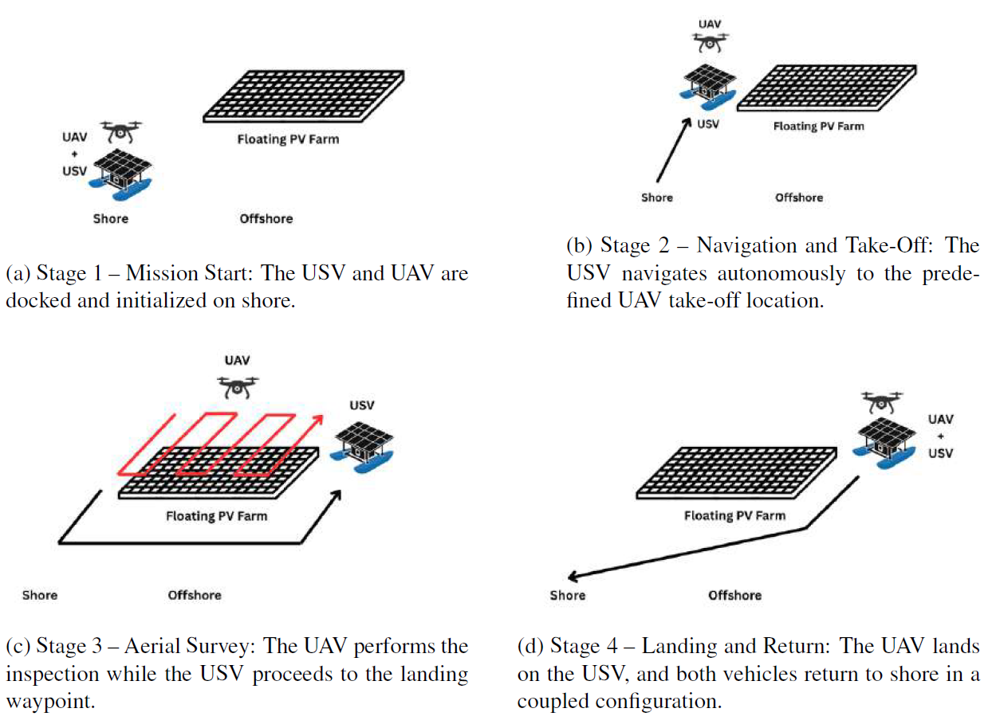

Project Overview
The NEST (Non-stationary Emersed Structure for Takeoff-landing) is a novel catamaran-style Unmanned Surface Vehicle (USV) designed to serve as a mobile launch and recovery platform for Unmanned Aerial Vehicles (UAVs). This project aims to improve the inspection of floating photovoltaic (PV) plants through a cooperative approach, where the USV provides transportation and communication infrastructure to the UAV.
By transporting the UAV to the offshore inspection site and retrieving it afterward, the USV significantly reduces the UAV's flight time and extends its effective operation range. The dual-hull configuration ensures a stable platform for safe landings in maritime environments.


Technical Specifications
| Characteristics | Specifications |
|---|---|
| Dimensions | 2.0 m × 2.0 m × 1.3 m |
| Total weight | ~100 kg |
| Available payload | ~200 kg |
| Drive mode | Vectorial drive |
| Max speed | 1.5 m/s |
| On-board sensors | Navigation: GPS, IMU, Compass. Perception: 3D LiDAR, visual and thermal cameras |
| Power supply | LiFePO4 25.6 V @ 200 Ah |
| Power consumption / Operation time | ~3300 W / ~2 h |
Hardware Architecture
The NEST USV utilizes a modular design, distinctly separating the power and electronic subsystems.
- Power Module: Housed in an IP67-rated Peli Air case, it includes a 24V battery, a power switch, a fuse for over-current protection, and a charging port.
- Electronics Module: Located in an IP67 Fibox enclosure, this module integrates an onboard computer, a CubeOrange flight controller, and sensors including GPS, IMUs, a compass, and a LiDAR sensor.
- Actuation & Firmware: The flight controller runs a modified version of ArduSub firmware adapted to support a vectored thruster configuration. This enables holonomic navigation, which is essential for position holding during UAV takeoff and landing.

Software Architecture & Autonomous Navigation
The navigation architecture is built around the ROS2 nav2 framework to autonomously manage task allocation, waypoint routing, and obstacle avoidance.

- Localization & Sensor Fusion: An Extended Kalman Filter (EKF) merges GPS, IMU, and compass data to maintain robust pose estimation. The system seamlessly maps ArduSub's standard North-East-Down (NED) coordinate frames to the East-North-Up (ENU) framework used by ROS2.
- Costmap Generation & Path Planning: The workspace is modeled using an occupancy grid converted into a costmap with spatial decay inflation layers to provide safety margins around static obstacles. The global planner uses artificial potential fields (navigation functions) to calculate an optimal, local-minima-free route.
- Velocity Control: A modified Pure Pursuit algorithm tracks the planned path using an adaptive lookahead mechanism to determine desired velocities, enhanced by two-stage filtering for smooth motion and acceleration limits.
- Local Planner (AVOA): The Adaptive Velocity Obstacle Avoidance (AVOA) algorithm operates in real-time to avoid dynamic obstacles by restricting dangerous velocity space within predefined time-window constraints.
- Thrust Control: A decoupled PID architecture independently translates linear and angular velocity targets into corresponding physical thrust forces, utilizing gain scheduling for low speeds and anti-windup protection.